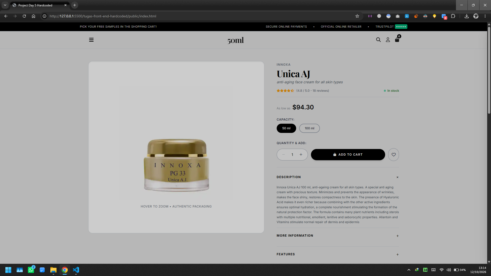
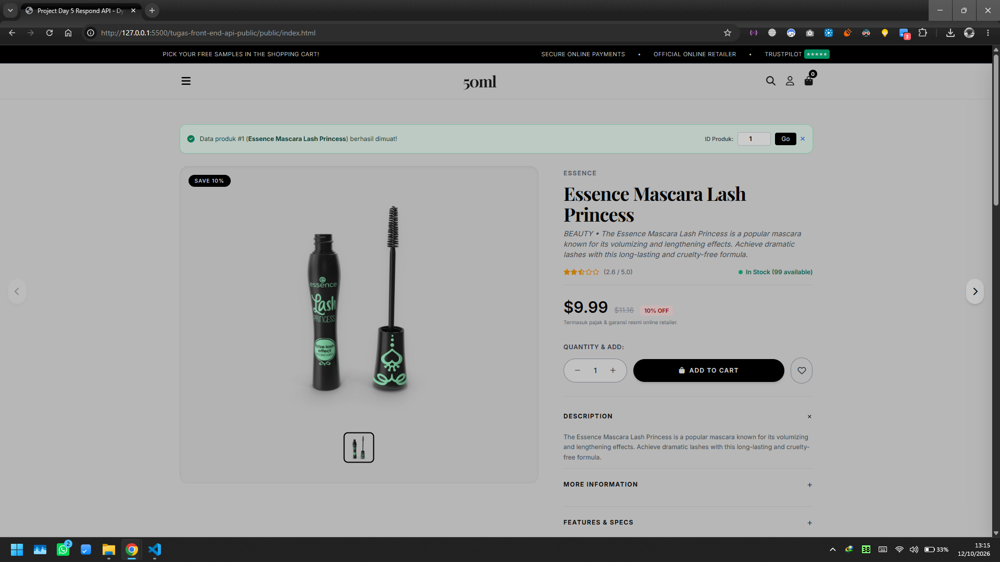
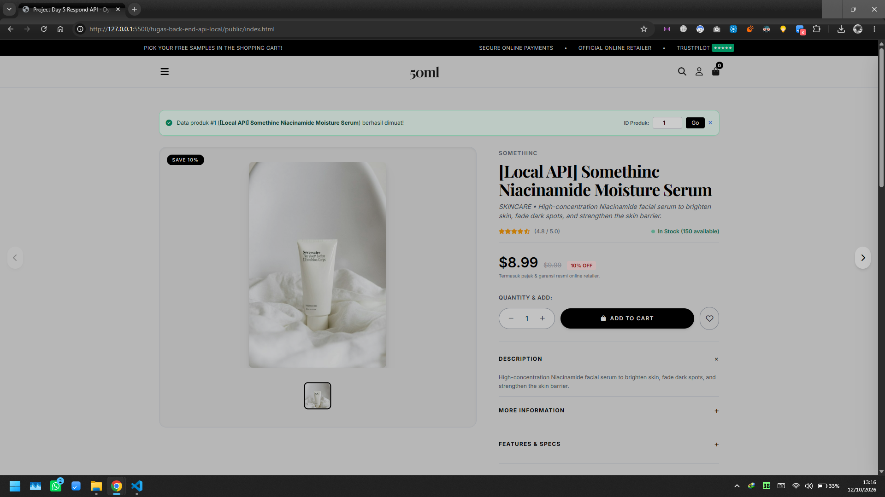
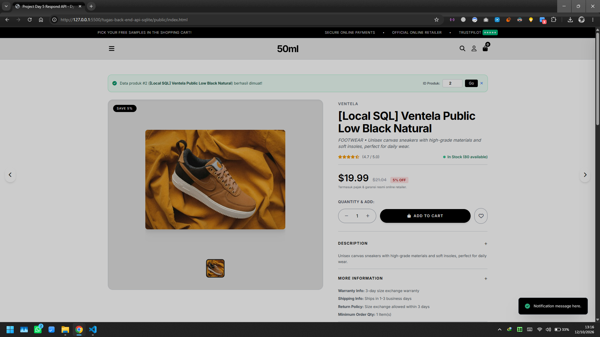
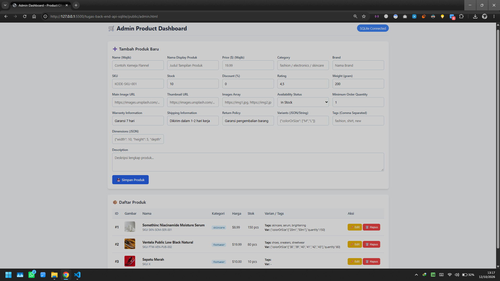
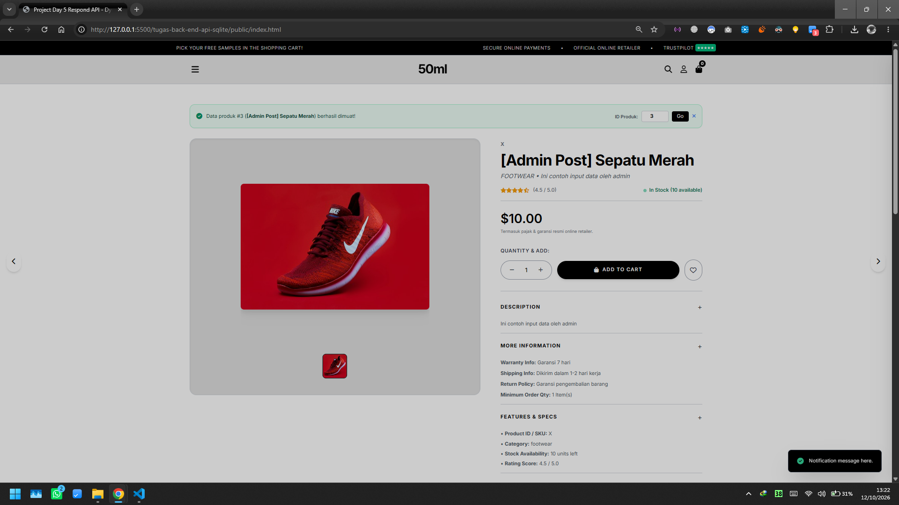

Ilham Dwi Putranto
Kelas: Full-Stack Web Development
Kesan Mengerjakan & Vibes Coding (1 Minggu Awal)
Mengikuti kelas penggunaan AI pada project web develompentselama satu minggu pertama memberikan pengalaman baru yang signifikan. Fokus utama bukan lagi penulisan kode per baris, melainkan menjadi pengarahan logika, arsitektur, dan konsep dengan bantuan AI. Interaksi yang intensif dengan AI memungkinkan proses penerjemahan ide menjadi prototipe web berjalan dengan sangat cepat dan efisien.
Selama satu minggu awal belajar, berbagai hasil konkret telah berhasil dicapai, mulai dari penyusunan struktur kode yang lebih rapi hingga implementasi fitur-fitur kompleks. AI terbukti mempercepat proses, memberikan rekomendasi optimasi kode, serta menyediakan alternatif solusi teknis saatmenghadapi hambatan. Efisiensi waktu yang diperoleh memungkinkan perhatian lebih banyak dicurahkan pada validasi ide, alur pengguna, dan kualitas produk secara keseluruhan.
Pendapat saya mengenai vibes coding adalah bahwa Vibe coding tidak menghilangkan kebutuhan akan pemahaman pemrograman dasar, melainkan mengubah peran pengembang menjadi seorang pengarah yang memandu AI untuk mewujudkan visi produkyang dapat membuat proses pengembangan web terasa lebih adaptif, menyenangkan, dan inklusif.
Langkah Pengerjaan Projek
Tahapan terstruktur beserta kesan pengerjaan pada setiap tahapan proyek.
Memahami Perintah Proyek
Menganalisis instruksi tugas, sasaran utama, dan batasan arsitektur.
Menyusun Langkah Pengerjaan
Merencanakan alur teknis, struktur folder, serta strategi pemecahan masalah.
Membuat PRD
Menyusun Product Requirement Document sebagai acuan spesifikasi fitur.
Membuat Markdown Docs
Menyusun requirement.md, design.md, dan
task.md.
Mengeksekusi Penulisan Program
Pengodean komponen frontend dan endpoint backend berbasis AI First.
Analisis Program
Pengujian fitur, verifikasi integritas data, serta pemeriksaan bug/error.
Merapikan Program
Refactoring kode, pengorganisasian subfolder public, dan pembersihan file.
Submit Program
Finalisasi repositori, pembuatan landing page portal, dan penyerahan tugas.
Program & Infrastruktur Mengerjakan Proyek
5 ekosistem utama yang mendukung penuh proses pengerjaan projek ini.
1. Gemini & GPT AI
Asisten pemikiran utama untuk merancang arsitektur, drafting kode, dan debugging.
2. VS Code
Code editor utama tempat eksekusi penulisan program dan manajemen folder.
3. Google Docs
Media pencatatan draft PRD, ideasi cepat, dan pengorganisasian materi awal.
4. Google Search
Eksplorasi referensi dokumentasi sintaks, riset pustaka, dan komparasi solusi.
5. Rekaman Live Class
Panduan acuan materi utama untuk mengkonfirmasi syarat dan alur tugas.
Panduan Menjalankan Backend Local SQLite
Syarat wajib agar server lokal (server.js) dan pembacaan database (seed.js) berjalan tanpa kendala.
Ketentuan & Syarat Lingkungan
- Node.js Environment: Pastikan Node.js sudah terinstall di perangkat lokal.
- Dependensi Database: Package SQLite (seperti `sqlite3` atau `better-sqlite3`) dan `express` terinstall melalui `npm install`.
- Inisialisasi Seed.js: File `seed.js` wajib dijalankan pertama kali untuk membuat struktur tabel database lokal dan mengisinya dengan data awal.
- Port Server: Pastikan port default server (misal: port `3000`) tidak sedang digunakan oleh aplikasi lain.
Langkah Eksekusi Perintah Terminal
# 1. Buka terminal lalu masuk ke direktori
cd "nama direktori tugas"
# 2. Install semua modul paket yang dibutuhkan
npm install
# 3. Jalankan Seeder Database (Agar database & tabel terbentuk)
node seed.js
# 4. Jalankan Server API Backend Utama
node server.js
# Server siap menerima permintaan di http://localhost:3000
Daftar Modul & Projek Utama
Setiap tombol mengarah langsung ke index.html pada subfolder
/public masing-masing projek.
1. tugas-front-end-hardcoded
Pengembangan antarmuka statis dengan tata letak HTML/CSS kustom yang responsive dan presisi secara visual.
2. tugas-front-end-api-public
Aplikasi Front-End dinamis yang mengonsumsi data langsung dari endpoint Public API secara asynchronous.
3. tugas-back-end-api-local
Pengembangan REST API lokal Node.js & Express menggunakan mock storage memori lokal.
4. tugas-back-end-api-sqlite
Layanan API berbasis SQLite terintegrasi seeder data seed.js untuk data base.
5. Eksplorasi Front-End Admin Manajemen Halaman Product
Halaman antarmuka khusus admin untuk memanajemen data katalog produk (tambah, edit, hapus) yang terhubung ke database lokal SQL / SQLite.
Form Kritik & Saran Penilai
Masukan Anda sangat berharga. Form ini dapat diisi langsung oleh penilai dan akan otomatis terhubung ke WhatsApp saya.
Dokumentasi Pengujian Program (Bukti Berjalan)
Klik gambar di bawah untuk menampilkan tampilan fullscreen.





